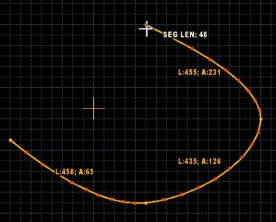

This mode lets you draw various curve shapes.
Menu path: Mode -> Draw Curve.
Action category: Drawing.
Default key: Ctrl-Alt-D.
Additional actions: Increase Subdivision Level, Decrease Subdivision Level.
You can activate this mode by pressing Ctrl-Alt-D (default key).
Press "Continuous drawing" button on the mode panel to disable automatic switching to previous editing mode after finishing drawing.
Press "Auto-finish drawing" button on the mode panel to automatically finish drawing when currently drawn lines and already existing level geometry form a closed shape.
You can use the mode panel or "Increase Subdivision Level" and "Decrease Subdivision Level" actions to control how detailed the curve is:
